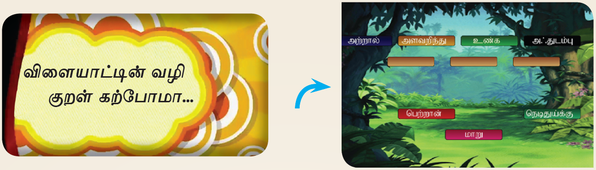
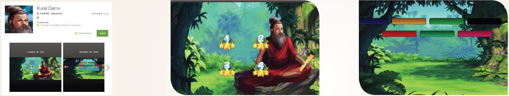

இணையச் செயல்பாடுகள்

படிகள்:
கொடுக்கப்பட்டிருக்கம் உரலி அல்லது விரைவுக் குறிட்டைப் பயன்படுத்தித் திருக்குறள் என்னும் செயலியைப் பதிவிறக்கம் செய்து நிறுவிக்கொள்க.
செயலின் முதல் பக்கத்தில் ஆரம்பிக்க, தொடர்க, வகைப்பாட்டியல் போன்ற தெரிவுகள் தோன்றும். இதன் வழியே விரும்பும் திருக்குறளை அறிக.
மேலும் குறள் விளையாட்டு என்பதனைத் தெரிவு செய்து மாறி இருக்கும் சீர்களை வரிசைப்படுத்தித் திருக்குறளை விளையாட்டிள் மூலம் அறிக.

செயல்பாட்டிற்கான உரலி
https://play.google.com/store/apps/details?id=com.EL4.JuralgGame&hl=en
ஸ்டார் கொடுக்கப்பட்டுள்ள படங்கள் அடையாளத்திற்காக மட்டுமே